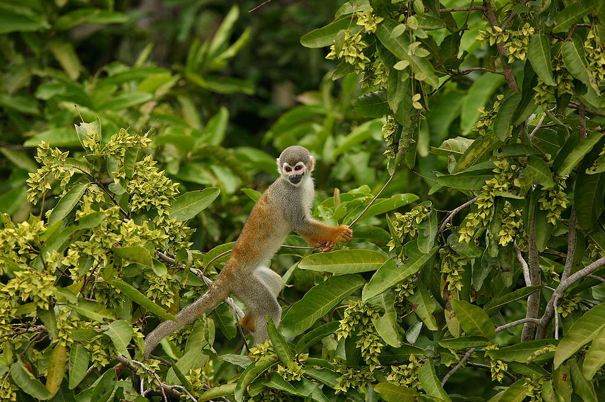
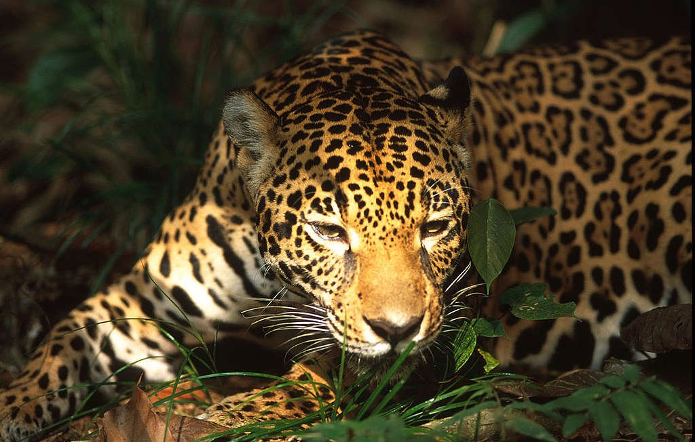

¿Cómo sería el mundo si en el pasado hubiéramos sido más responsable con el cuidado de la naturaleza? Es difícil de imaginar. Somos generaciones que ya no alcanzamos a conocer millones de especies que se han ido extinguiendo año tras año como consecuencia de la actividad humana. Esto quiere decir que nos perdimos la experiencia de sonidos, seres y escenarios únicos.
Pero no todo está acabado, pues aún en 2020 es posible ver escenarios naturales asombrosos y biodiversos, como los santuarios de mariposas o ballenas, manantiales, biosferas y mares luminiscentes, Incluso hay ecosistemas que la humanidad aún desconoce pero que están en riesgo de desaparecer. Estos son algunos de los ecosistemas que requieren urgentemente de que nos organicemos para exigir a los gobiernos que los protejan:
Durante la mitad de 2019, varios incendios forestales dañaron la región amazónica de Brasil. La cantidad de incendios registrados en el Amazonas en 2019 es una de las más grandes en los últimos años, ya que entre enero y agosto de este año aumentaron 145%, en comparación con los registrados en el mismo período en 2018.
No es sólo el Amazonas. En México, como en todo el mundo, los bosques tropicales peligran por la deforestación a gran escala, la cual tiene como objetivo mantener funcionando a la industria ganadera.
A causa de esta deforestación en los bosque de la Rivera Maya y Yucatán, México está perdiendo importantes ejemplares de especies en peligro en extinción que, además, forman parte de la identidad histórica de nuestro país, como el jaguar y el mono araña.
La devastación humana amenaza los océanos de maneras múltiples. El cambio climático, el uso excesivo de plásticos, la pesca excesiva y la minería son sólo algunas de las expresiones de esa debastación.
De acuerdo con el reporte 30X30 Guía para la protección de los océanos , que elaboraron Greenpeace, la Universidad de Oxford y la Universidad de York, en las aguas internacionales existe una impresionante riqueza de vida marina y de ecosistemas, pero muchas de las especies más icónicas -como los albatros, las tortugas o los tiburones- han sufrido dramáticas disminuciones en sus poblaciones en el espacio de unas pocas décadas.
Por ejemplo, hábitats como los arrecifes de coral de aguas frías o los campos de esponjas, tienen siglos de antigüedad en algunos casos y han sido por los equipos de pesca pesados que se arrastran a lo largo de los fondos marinos. Incluso han disminuido poblaciones de especies que deberían haber estado bajo una administración estricta. Además, la población de atún rojo del Pacífico se ha desplomado a menos del 3% de su abundancia histórica; y aún se practica su pesca.
El cambio climático se expresa de manera particularmente dramática en la helada Antártida. En una expedición a la Antártida llamada “De Polo a Polo”, Greenpeace, con el apoyo de personas científicas, identificó disminuciones drásticas en las colonias de pingüinos, con pérdidas de hasta 77%, como consecuencia del aumento de temperatura del océano Austral. Esto afecta la cadena alimentaria y el ecosistema de estas especies, por ejemplo, el oso polar. De acuerdo con el Fondo Mundial para la Naturaleza, los osos polares que tienen acceso continuo al hielo marino son capaces de cazar durante todo el año, pero en aquellas áreas donde el hielo se derrite completamente cada verano, los osos se ven obligados a pasar varios meses en tierra y con dificultades para conseguir alimento. Algunos osos polares, especialmente en el sur de su área de distribución, sufren de desnutrición, especialmente las hembras con cachorros. La población de osos polares que se tiene en cuenta actualmente oscila entre 22 mil y 31 mil ejemplares en el mundo. De mantenerse la tendencia actual, el oso polar podría desaparecer en el próximo siglo.
La pérdida de una sola especie pone en peligro ecosistemas enteros en los que habitan más especies diversas. Ahora es un buen momento para detenernos como humanidad y repensar en qué mundo deseamos vivir mañana.
Mas informacion Click aqui